Saving Data From Different Sources and Format Conversions
Back To Basic Concepts
Back To Homepage
Vector Formats
*A note on Web Feature Services (WFS)
Some Web Feature Services layers can be saved with the methodes for saving vector data below, this means that both the data itself and in some cases the symbology information can saved to your computer and used locally. This is common with ESRI ArcGIS Online WFS, and in some cases ArcGIS Online Web Mapping Services can be loaded as WFS and saved just the same.
Saving To a Vector Single File formats (*.SHP, *.GeoJSON)
Saving a Layer to an ESRI Shapefile or GeoJSON file is very easy and simple in QGIS.
What you need to do is just right-click the layer you want to save, Export->Save Features As... or Save Selected Features As.. if you want to save only your selected features.
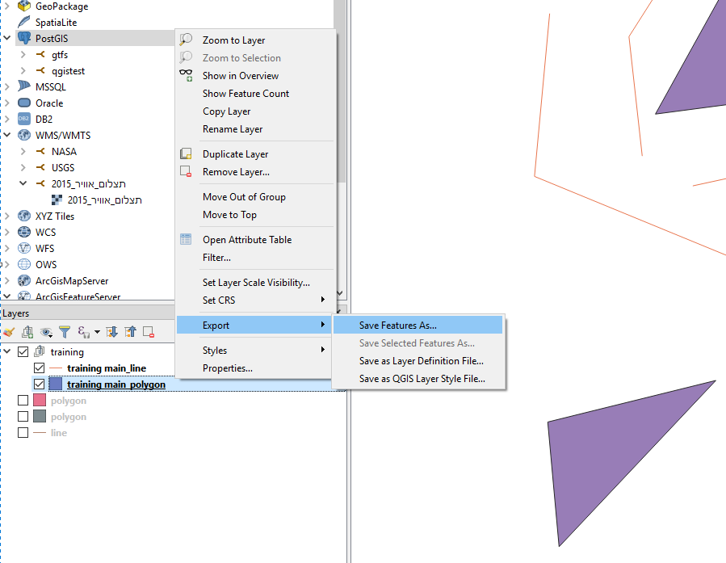
You then need to select the format you want to save in at the top of the window, in this example you can see the option for GeoJSON and the one for selected features in Shapefile.
 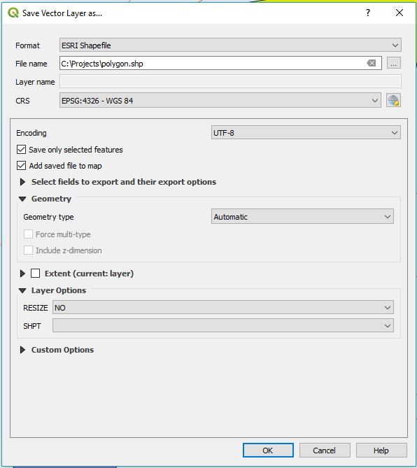
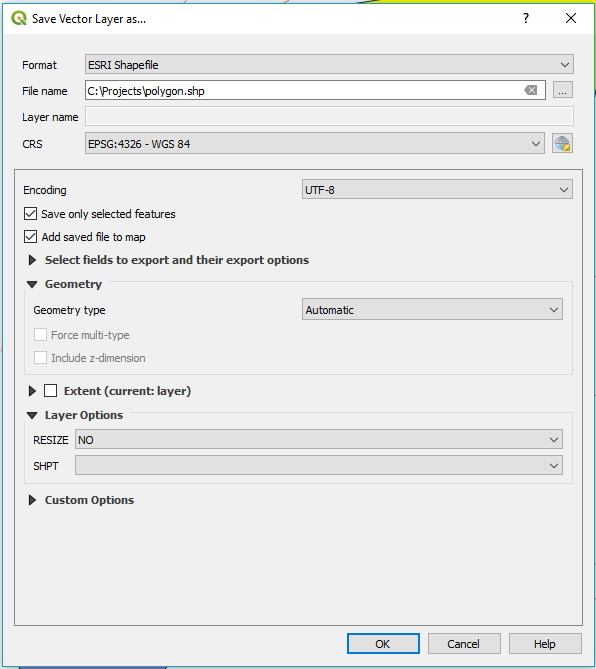
If the file exists you will be asked to overwrite, cancel the save or if you are saving as GeoJSON you will be given the option to append the layer.
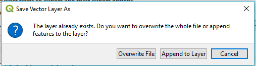
And thats it, Simple and easy to use, and now you know how to do that in Open Source.
Saving To an ESRI FileGeoDataBase (*.gdb)
You can read data from an ESRI FileGeoDataBase with the base version of QGIS.
however, if you want to be able to edit and rewrite the layers into the database, you will need the gdal-filegdb driver.
you can install it using the OSGEO4W installer.
just select to install it like so:
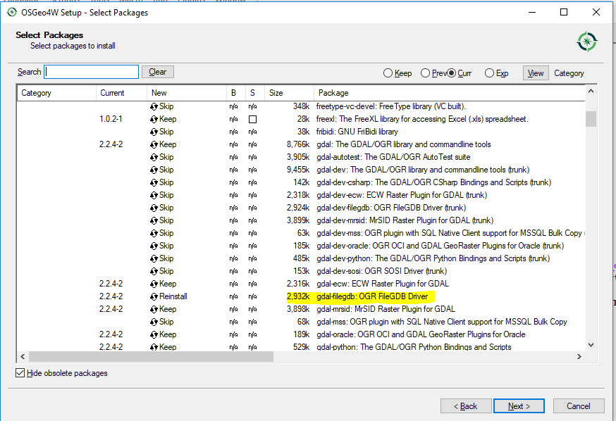
After your installation has the new library plugin (gdal-fgdb) you can simply save your layers into an existing ESRI FileGeoDataBase or create a new one while saving.
this can be done by right-clicking the layer you want to save, Export->Save Features As... or Save Selected Features As.. if you want to save only your selected features.
You then need to select the format you want to save in at the top of the window, simply choose ESRI FileGDB. Now here you will most likely get annoyed, since the expected input in the browse window is a file, and not a folder.
My suggestion, just navigate to where your *.gdb folder is, or where you want to create it and simply copy the full path for an existing one or just add the name you want to give to a new FileGeoDataBase followed by .gdb.
In this example the folder training2 doesn't exist yet.
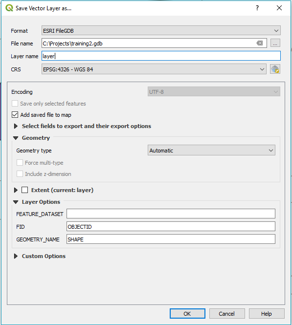
And thats it, Simple and easy to use, and now you know how to do that in Open Source.
Saving To a DataBase
*Why the example uses only PostgreSQL
- Because QGIS plays very well with PostGIS, which is an extension for PostgreSQL
- Because every section takes time to write, and I have and use PostgreSQL.
- I do plan to add other SQL databases in the future, if you can document them yourself commits are welcome
Using The DB Manager
Exporting a layer to an existing database connection can be done by performing the foolowing steps.
From the top menu select Database and then select DB Manager.
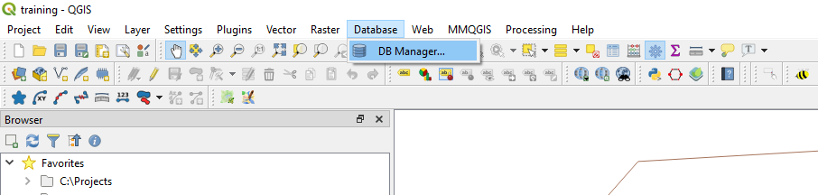
Then select the database you want to save into in the DB Manager window.
In this example i'm using the qgistest database stored in a PostgreSQL host with the PostGIS extansion enabled.
QGIS doesn't have to connect only to spatial databases but when saving data and working in the DB Manager those are all the options possible.
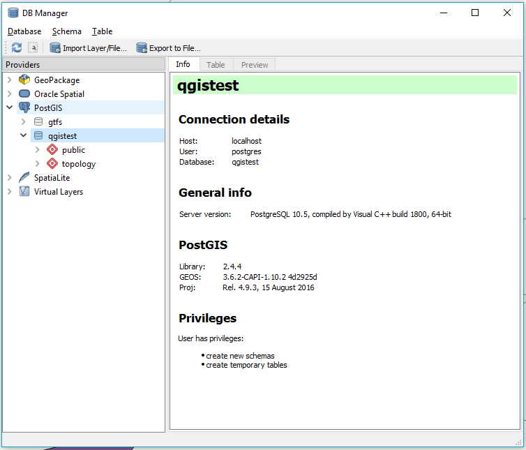
You can notice that QGIS treats GeoPackage connections as database connectins. that is because they technically are. GeoPackage files are a modification of SQLite database files and can behave similliar to them.
The next step you have to take is click on the Import Layer/File..., this will open a new window which should look like this.
The window allows you to choose a layer from the workspace with the dropdown menu, or a file with the ... button next to it.
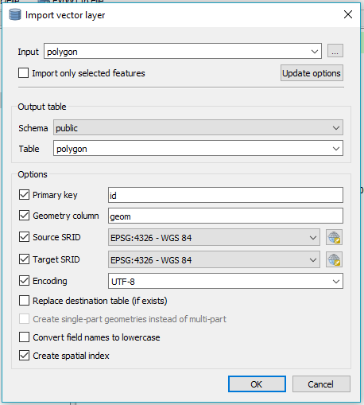
You can now select the schema in the database you want to save the layer to and the name for the table.
The options below allow you select the primary key column, the geometry column to calculate geometry from if you want to convert a table to a spatial table.
It's also possible to reproject your layer to a new spatial reference, select the encoding, split multipart geometries to single part, convert field names to lowercase (recommended in PostgreSQL) and create a spatial index.
Be patient as the process can take some time, depending on the size of your layer, until you get the message that the Import was successful
And thats it, Simple and easy to use, and now you know how to do that in Open Source.
Saving To a Layer in a Multiple Layers Database
Saving in GeoPackage, Spatialite, Sqlite etc..
GeoPackage, Sqlite and Spatialite files are databases built from a single file, with GeoPackage and Spatialite being able to store spatial data.
They store data like any other database, but can be shared very easily since they are formed solely from one file.
To store vector data in them you right-click the layer you want to save then Export->Save Features As... or Save Selected Features As.. if you want to save only your selected features.
You then need to select the format you want to save in at the top of the window, simply choose GeoPackage for this example, but the same options are applicable for Sqlite and Spatialite.
You can either create a new file by choosing a path and adding a name or an existing one by choosing it.
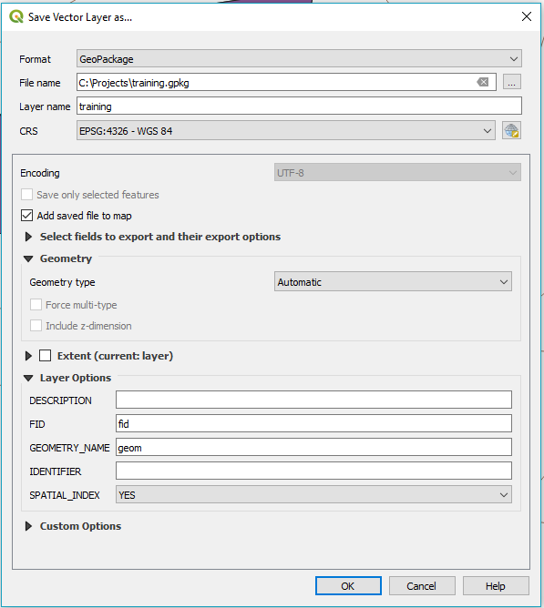
!!! Pay attention that the default layer name is the same name that the file has, if you want to store multiple layers on the file make sure you change the Layer Name.
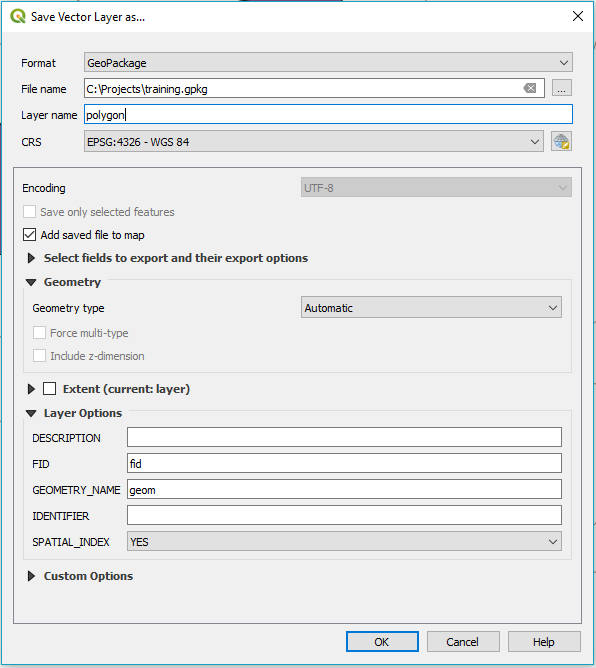
Notice that you can choose the GEOMETRY column in the options here, this means you can convert a regular table to a spatial layer while exporting it.
To save the file you simply click OK,
And thats it, Simple and easy to use, and now you know how to do that in Open Source.
Raster Formats
Saving To a Single Raster File
Go back to the top
Saving a Raster inside a Database
Go back to the top
Saving Style Information
Saving Style Information From A Local Layer
Go back to the top